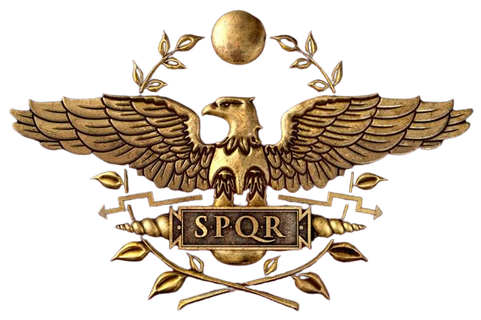

EXPANSÃO DO IMPÉRIO ROMANO
E A QUESTÃO DA LÍNGUA
Fundação e Expansão de Roma
|  |
A cidade de Roma teve sua origem com os latinos, uma tribo de origem indo-germânica que habitava a Península Itálica. A localização estratégica de Roma favoreceu sua expansão e integração de outros povos, consolidando-a como uma potência dominante no Mediterrâneo ocidental. O domínio sobre toda a região italiana possibilitou que Roma se tornasse uma ameaça considerável para a cidade comercial de Cartago. A rivalidade entre as duas potências perdurou por seis décadas, culminando na vitória de Roma, que garantiu seu domínio sobre toda a bacia do Mediterrâneo. As origens do Estado Romano datam do século VIII ou IX a.C., quando a cidade de Roma foi fundada em 753 a.C., de acordo com a lenda de Rômulo e Remo. Crescendo progressivamente, Roma formou uma liga de cidades conhecida como Liga Latina, ampliando sua influência sobre os territórios vizinhos ao longo dos séculos V a.C. e II d.C. |
A história romana é dividida em três fases fundamentais:
1. Monarquia (até 509 a.C.): Governada por reis, Roma gradualmente delegou poder para os aristocratas, preparando o caminho para a República.
2. República (509 a.C. a 27 a.C.): O poder era dividido entre um senado aristocrático e magistrados eleitos, como cônsules e tribunos da plebe.
3. Império (27 a.C. a 476 d.C.): Iniciada com a ascensão de Augusto, marcou o início de um governo centralizado sob o modelo imperial.
O latim, uma língua da família itálica, faz parte do grupo indo-europeu. Esta família de línguas evoluiu a partir de uma língua original, não documentada e já desaparecida. Os indo-europeus originaram-se cerca de 5000 anos atrás, com três grandes ondas migratórias que se estenderam até o Báltico, Danúbio e Balcãs. O latim tem raízes com outras línguas itálicas e osco-úmbricas, apresentando variações regionais desde suas primeiras manifestações. Mesmo dentro de áreas limitadas, o latim exibia variações regionais. Os primeiros textos em latim, como a inscrição da fibula de Preneste (século VII a.C.), revelam traços do latim arcaico. A história do latim abrange-se do século IX a.C. até aproximadamente 450 d.C., mantendo-se presente na Idade Média e Renascimento. A literatura latina estabeleceu um contraste entre o latim clássico e o vulgar, com este último evoluindo rapidamente durante o Império e contribuindo para o surgimento das línguas românicas.